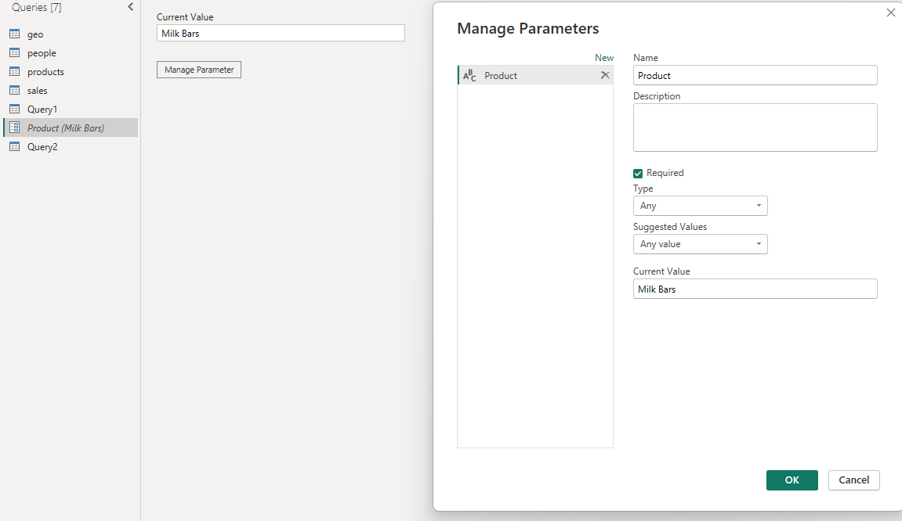

Sales Performance Dashboard
Scroll down to the bottom of the page and select 'View Power BI Dashboard' to view the dashboard.
Important note
As viewers of this website do not have editting permissions when viewing the dashboard (via the button below), you will not be able to change the parameter value and view the respective changes, as that requires having access to the dataaset. However, I have included a video at the bottom of the page to demonstrate this process.About the Data
The aim of this project was to demonstrate how Power BI (PBI) can dynamically integrate with databases. The database was created in MySQL and the SQL script to create the database was provided by Chandoo. As this is not an SQL project, the SQL script to create the database will not be discussed, however the SQL query utilised in Power BI to extract the data will be covered. For non-experts click here to view the data in an Excel.Methodology
Data ExtractionThe PBI - MySQL connector was utilised to extract the data from the database with a simple SQL query featuring a join.
Building the Dashboard
The data displayed on the dashboard along with the corresponding visualisations used is as follows:
- Quarterly sales - Line chart
- Sales by geography - Stacked bar chart
- Total sales and boxes sold for each sales person - Table
- Several general metrics - Cards
The idea behind parametrizing the database query is to allow the user to refine the data to what they desire. One may ask - why can't all the data be extracted from the database and then filters can be applied to display the desired data. Although this is a feasible method, when dealing with large data sets it becomes inefficient for PBI to extract all of the data and only use some of it. Instead the efficiency of the process can be enhanced by only extracting the data that the user requires.
The first step in parametrizing the native database query was to create a parameter in Power BI. The parameter was called 'Product', as it would allow the user to input which product they wish to the extract sales data for.

The native database query was then altered in Power Query to include the parameter:

With the parametrized native database query complete, the user of the dashboard can alter the value of the parameter to view sales data about the product of their choice. Moreover, depending on the parameter value, the title of the dashboard will change accordingly. Watch the video below to see it in action.